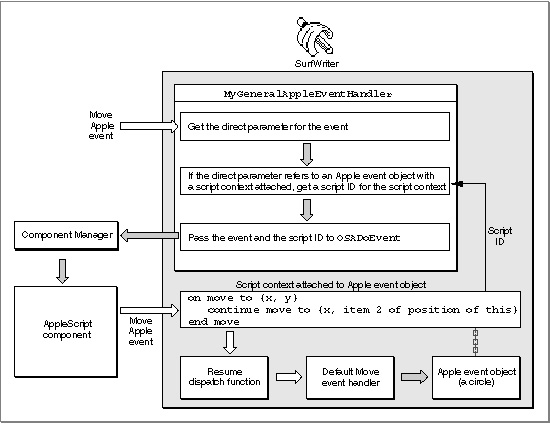

Using a Script Context to Handle an Apple Event
One way to associate a script with an object is to associate a script context with a specific Apple event object--that is, with any object in your application that can be identified by an object specifier record. When an Apple event acts on an Apple event object with which a script context is associated, your application attempts to use the script context to handle the Apple event. This approach can be useful if you want to associate many different scripts with many different kinds of objects.Figure 7-7 illustrates one way that an application can use a script context to handle an Apple event. This example shows how you can use a general Apple event handler to provide initial processing for all Apple events received by your application. If an Apple event acts on an object with which a script context is associated, the general handler attempts to use the script context to handle the event.
The SurfWriter application in Figure 7-7 associates script contexts (called script objects in AppleScript) with geometric shapes such as circles or squares. These script contexts can contain one or more user-defined handlers for specific Apple events. For example, the script context shown in Figure 7-7 is associated with a circle and contains this handler:
on move to {x, y} continue move to {x, item 2 of position of this} end moveThis handler exists only as AppleScript statements in the script context and doesn't have an entry in SurfWriter's Apple event dispatch table. SurfWriter does have its own standard Apple event handlers installed in its Apple event dispatch table. When SurfWriter receives a Move event that acts on the circle with which this script context is associated, SurfWriter uses the handler in the script context to modify its own standard handling of the event. The rest of this section describes how this works.Figure 7-7 Using a handler in a script context to handle an Apple event

The
MyGeneralAppleEventHandlerfunction in Figure 7-7 is installed in SurfWriter's special handler dispatch table. Thus,MyGeneralAppleEventHandlerprovides initial processing for all Apple events received by SurfWriter. When it receives an Apple event,MyGeneralAppleEventHandlerchecks whether a script context is associated with the object on which the event acts. If so,MyGeneralAppleEventHandlerpasses the event and a script ID for the script context to theOSADoEventfunction. If not,MyGeneralAppleEventHandlerreturnserrAEEventNotHandled, which causes the Apple Event Manager to look for the appropriate handler in SurfWriter's Apple event dispatch table.The
OSADoEventfunction looks for a handler in the specified script context that can handle the specified event. If the script context doesn't include an appropriate handler,OSADoEventreturnserrAEEventNotHandled. If the script context includes an appropriate handler (in this example, a handler that beginson move),OSADoEventattempts to use the handler to handle the event.When it encounters the
continuestatement during execution of theon movehandler shown in Figure 7-7, the AppleScript component calls SurfWriter's resume dispatch function. A resume dispatch function takes an Apple event and invokes the application's default handler for that event directly, bypassing the application's special handler dispatch table and theMyGeneralAppleEventHandlerhandler (or its equivalent). In this case, the AppleScript component uses SurfWriter's default Move handler to move the circle to a different location than the one specified in the original Move event. The location specified by{x, item 2 of position of this}has the same horizontal coordinate as the location specified by the original event, but specifies the circle's original vertical coordinate (item 2 of the circle's original position), thus constraining motion to a horizontal direction.The AppleScript component calls the resume dispatch function as soon as it encounters a
continuestatement during script execution. For example, if the handler in Figure 7-7 contained additional indented statements after thecontinuestatement, the AppleScript component would proceed with the execution of those statements after calling the resume dispatch function successfully.A script context can modify the event and use the default Apple event handler to execute the modified event, as in this example; or it can override the default handler completely, performing some completely different action; or it can perform some action and then pass the original event to the application's default handler to be handled in the usual way. Script contexts associated with Apple event objects thus provide a way for users to modify or override the way an application responds to a particular Apple event that manipulates those objects.
A general Apple event handler can use the
OSAExecuteEventfunction instead ofOSADoEventto execute a script context. The main difference between these functions is is thatOSAExecuteEventreturns the script ID for the resulting script value, whereasOSADoEventreturns a reply event.To create a script context, pass the source data for the scripting-language statements you want the script context to contain to
OSACompilewith themodeFlagsparameter set tokOSACompileIntoContext. The resulting script context is identical to a script context returned by theOSAMakeContextfunction, except that it contains compiled statements."Using a Script Context to Handle an Apple Event," which begins on page 10-19, describes this method of executing a script in more detail.